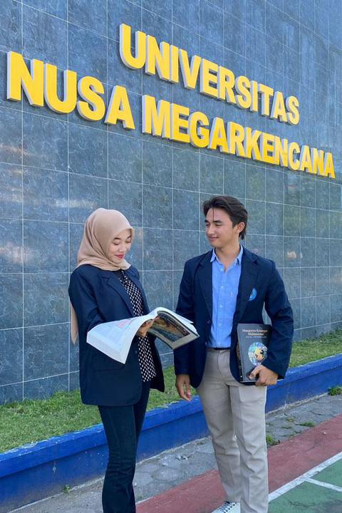
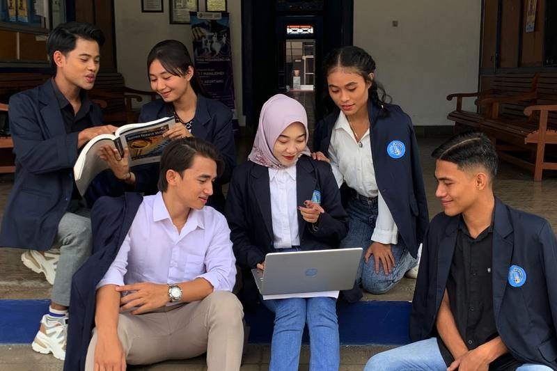
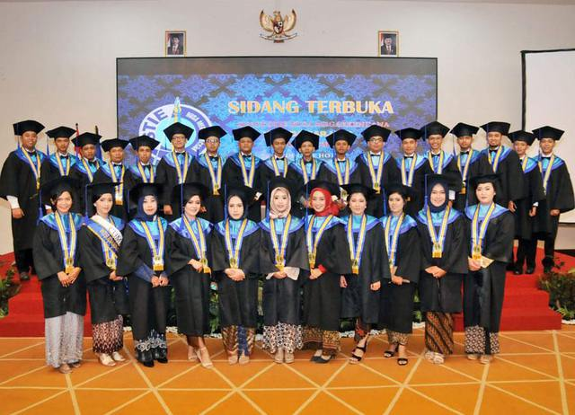
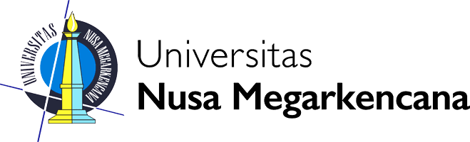

Fakultas Teknik dan InformatikaYogyakartaProgram Studi
Teknik Sipil
Menyiapkan sarjana teknik yang terampil dan profesional dalam merencanakan, merancang, dan membangun infrastruktur untuk pembangunan berkelanjutan.



Belajar teknik sipil dari teori hingga praktik lapangan
Program Studi Teknik Sipil UNMEKA mempersiapkan lulusan yang mampu merencanakan, merancang, dan membangun infrastruktur. Pembelajaran memadukan teori dengan praktik lapangan untuk menghasilkan solusi inovatif bagi pembangunan berkelanjutan.
Dari patok pertama hingga gedung berdiri
Setiap tahap proyek dikerjakan oleh bidang ilmu yang dipelajari di Teknik Sipil.
Pendaftaran dibuka melalui enam jalur
Tersedia bantuan biaya KIP-Kuliah hingga 100% dan beasiswa Prestasi Raport hingga 50%. Jalur Transfer, Ekstensi, dan Karyawan juga tersedia.
Berita terbaru
Lima bidang utama teknik sipil
Pilih bidang untuk melihat cakupan dan mata kuliah yang terkait.
Dosen Program Studi
Kehidupan kampus

YogyakartaUnggul · Mandiri · Berdaya Saing
Universitas Nusa Megarkencana bernaung di bawah Yayasan Pendidikan Nusa Megarkencana dan memperoleh izin perubahan bentuk menjadi universitas pada 23 Juli 2024. Program Studi Teknik Sipil hadir sebagai bagian dari Fakultas Teknik dan Informatika.
Geser bebannya, lihat baloknya bekerja
Balok baja sepanjang 10 meter di atas tumpuan sendi dan rol. Seret beban P di sepanjang balok, ubah besarnya, lalu lihat reaksi tumpuan, diagram momen, dan lendutannya berubah seketika.
Seret kotak P atau ketuk di mana saja pada balok. Bentuk lendutan digambar diperbesar agar terlihat.
- Reaksi A
- Reaksi B
- Momen maksimum
- Tegangan lentur
- Lendutan maksimum
Seberapa kuat gedungmu menahan gempa?
Indonesia berada di jalur gempa aktif, sehingga setiap gedung harus dirancang tahan gempa. Atur jumlah lantai dan kekuatan gempa, pilih teknologi perlindungan, lalu picu gempanya.
- Periode getar
- Simpangan atap
- Simpangan antarlantai maksimum Batas: retak 0,6% · rusak berat 1,4% · runtuh 2,2%